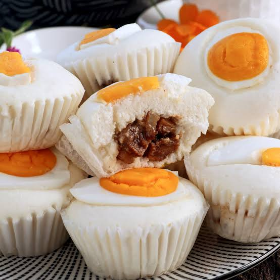

About Puto Pao
Puto Pao combines the soft and fluffy texture of traditional Filipino puto with a savory pork asado filling inside. The combination of sweet and savory flavors makes it a delicious and satisfying Filipino snack.
The puto is steamed until light and fluffy while the savory pork asado filling provides a flavorful surprise inside.
Ingredients
- Rice flour
- All-purpose flour
- Sugar
- Baking powder
- Milk
- Eggs
- Salt
- Pork
- Asado sauce
- Secret Ingredient
Product Specifications
| Product | Flavor | Color | Size | Price |
|---|---|---|---|---|
| Puto Pao | Pork Asado | White | Regular | ₱50 |